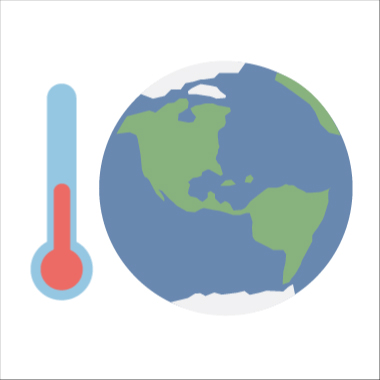

What is Climate? How is it different from Weather?
You may be aware of the current weather conditions. The variations we see and experience outside from day to day
are referred to as weather. One day it may rain, and the next it may be bright. It becomes chilly at times. It
may get rather heated at times. The weather varies from location to area as well. In one location, people may be
wearing shorts and playing outside. People far away may be shovelling snow at the same moment.
Climate refers to a location's typical weather. Seasonal climates can be rather diverse. In the summer, a
location may be generally warm and dry. In the winter, the same location may be cold and damp. Climates differ
depending on where you are. It's possible that you live somewhere where it snows all of the time. And other
people live in climates where swimming is always possible outside.
Earth’s climate has constantly been changing — even long before humans came into the picture. However, scientists
have observed unusual changes recently. For example, Earth’s average temperature has been increasing much more
quickly than they would expect over the past 150 years. Climate change is defined as a long-term shift in the
average circumstances of a region, such as temperature and rainfall. The Earth's surface is warming, according
to NASA scientists, and several of the warmest years on record have occurred in the last 20 years. The average
long-term changes throughout the entire Earth are referred to as global climate change. Warming temperatures and
variations in precipitation are examples, as are the impacts of global warming, such as:
Rising sea levels
Shrinking mountain glaciers
Ice melting at a faster rate than usual in Greenland, Antarctica and the Arctic
Changes in flower and plant blooming times.
Evidence
How do we know climate change is real?
The climate of the Earth has shifted over time. There have been seven cycles of glacial advance and retreat in
the last 650,000 years, with the abrupt end of the last ice age marking the start of the current climatic era –
and of human civilization. The majority of these climatic shifts are due to minute changes in Earth's orbit that
alter the quantity of solar energy received by our planet.
Scientific evidence for warming of the climate system is
unequivocal.
Intergovernmental Panel on Climate Change
The current warming trend is noteworthy because the majority of it is highly likely (more than 95 percent
likelihood) to be the consequence of human activities since the mid-twentieth century, and it is occurring at an
unprecedented rate spanning millennia.
Scientists have been able to view the big picture because to Earth-orbiting satellites and other technical
developments, which have allowed them to collect a wide range of data on our planet and its climate on a global
scale. The indications of a changing climate are shown in this corpus of data, which has been gathered over many
years.
Carbon dioxide and other gases' ability to trap heat was shown in the mid-nineteenth century. Many NASA sensors
are based on their capacity to influence the passage of infrared light through the atmosphere. There is no doubt
that rising quantities of greenhouse gases will cause the Earth to warm.
Greenland, Antarctica, and tropical mountain glaciers have all provided ice cores that show how the Earth's
climate responds to changes in greenhouse gas levels. Tree rings, ocean sediments, coral reefs, and layers of
sedimentary rocks all contain ancient evidence. The current pace of warming is about 10 times higher than the
typical rate of ice-age recovery, according to this old, or paleoclimate, evidence. After the last Ice Age,
carbon dioxide from human activities increased more than 250 times faster than it did from natural sources.
Causes
The causes of Climate Change
The "greenhouse effect"— warming that occurs when the atmosphere traps heat emanating from Earth toward space —
has been expanding due to human growth since the mid-twentieth century, according to scientists.
The presence of some gases in the atmosphere prevents heat from escaping. Long-lived gases that remain in the
atmosphere semi-permanently and do not respond physically or chemically to temperature changes are referred to
as "forcing" climate change. "Feedbacks" are gases, such as water vapour, that react physically or chemically to
temperature changes.
Gases that contribute to the greenhouse effect include:
Water vapor
It is the most prevalent greenhouse gas, but it also serves as a climatic feedback. As
the Earth's atmosphere warms, water vapour levels rise, but so do the chances of clouds and precipitation,
making these two feedback processes crucial to the greenhouse effect.
Carbon dioxide (CO2)
Carbon dioxide, a tiny but essential component of the atmosphere, is emitted by natural
processes such as respiration and volcano eruptions, as well as by human activity such as deforestation,
land use changes, and fossil fuel combustion. Since the start of the Industrial Revolution, humans have
raised CO2 levels in the atmosphere by 48%. The most important long-term "forcing" of climate
change is
this.
Methane
A hydrocarbon gas generated by both natural and human sources, such as waste
decomposition in landfills, agriculture, and particularly rice cultivation, as well as ruminant digestion
and manure management in domestic cattle. Methane is a considerably more active greenhouse gas than carbon
dioxide molecule for molecule, but it is also far less prevalent in the atmosphere.
Nitrous oxide
Soil cultivation techniques, particularly the use of commercial and organic
fertilisers, fossil fuel combustion, nitric acid generation, and biomass burning, all create a significant
amount of this potent greenhouse gas.
Chlorofluorocarbons (CFCs)
Synthetic chemicals completely of industrial origin utilised in a variety of purposes,
but now mainly controlled in manufacture and release to the atmosphere due to their ability to contribute to
ozone layer depletion by international agreement. In addition, they are greenhouse gases.
Human actions on Earth are altering the natural greenhouse. The combustion of fossil
fuels such as coal and oil has raised the concentration of carbon dioxide in the atmosphere during the
last
century (CO2). This occurs because the combustion of coal or oil produces CO2 by combining
carbon in the
air
with oxygen. The clearing of land for agriculture, industry, and other human activities has raised
greenhouse gas concentrations to a lesser amount.
Global Greenhouse gas emissions by each economic sector
Effects
The effects of climate change
The environment has already been affected by global climate change. Glaciers have decreased, ice on rivers and
lakes has broken up earlier, plant and animal ranges have moved, and trees have begun to bloom earlier.
Sea ice loss, increased sea level rise, and longer, more severe heat waves are all effects that experts
anticipated would occur as a result of global climate change in the past.
Taken as a whole, the range of published evidence indicates
that the net damage costs of climate change are likely to be significant and to increase over time.
Intergovernmental Panel on Climate Change
Scientists are confident that global temperatures will continue to increase for decades to come, owing in major
part to greenhouse gas emissions caused by human activity. Over 1,300 experts from the United States and other
nations make up the Intergovernmental Panel on Climate Change (IPCC), which predicts a temperature rise of 2.5
to 10 degrees Fahrenheit over the next century.
The amount of climate change effects on specific regions will vary over time and with the ability of various
societal and environmental systems to prevent or adapt to change, according to the IPCC.
Increases in global mean temperature of less than 1.8 to 5.4 degrees Fahrenheit (1 to 3 degrees Celsius) over
1990 levels, according to the IPCC, will have good effects in certain places and negative effects in others. As
global temperatures rise, net yearly expenses will rise as well.
"The breadth of available data indicates that the net damage costs of climate change are expected to be
considerable and to grow over time," the IPCC adds.
Future Effects
Some of the long-term effects of global climate change in the United States are as follows, according to the
Third and Fourth National Climate Assessment Reports:
Change Will Continue Through This Century and Beyond
Global climate is projected to continue to change over this century and beyond. The
magnitude of climate change beyond the next few decades depends primarily on the amount of heat-trapping
gases emitted globally, and how sensitive the Earth’s climate is to those emissions.

Temperatures Will Continue to Rise
The temperature rise has not been, and will not be, uniform or smooth across the
country or over time, because human-induced warming is overlaid atop a naturally variable environment.
Frost-free Season (and Growing Season) will Lengthen
The length of the frost-free season (and the corresponding growing season) has been
increasing nationally since the 1980s, with the largest increases occurring in the western United
States, affecting ecosystems and agriculture. Across the United States, the growing season is projected
to continue to lengthen.
Changes in Precipitation Patterns
Since 1900, average precipitation in the United States has grown, although certain
places have had higher increases than the national average, while others have seen declines. Over the
next century, the northern United States will receive more winter and spring precipitation, while the
Southwest will receive less.
More Droughts and Heat Waves
Droughts in the Southwest and heat waves (periods of extremely hot weather lasting days
to weeks) are expected to worsen, while cold waves are expected to become less severe.
Summer temperatures are expected to continue to rise, and much of the western and central United States
will experience a loss in soil moisture, which will intensify heat waves. What were once-in-a-decade
severe heat days (one-day occurrences) are expected to occur every two or three years over much of the
country by the end of this century.
Hurricanes Will Become Stronger and More Intense
Since the early 1980s, the strength, frequency, and length of storms in the North
Atlantic, as well as the frequency of the strongest (Category 4 and 5) hurricanes, have all increased.
Human and natural sources' respective contributions to these increases are yet unknown. As the climate
continues to warm, hurricane-related storm strength and rainfall rates are expected to rise.
Sea Level Will Rise 1-8 feet by 2100
Since accurate record keeping began in 1880, the global sea level has increased by
roughly 8 inches. By 2100, it is expected to rise another 1 to 8 feet. This is due to the addition of
water from melting land ice and the expansion of warm saltwater.
Storm surges and high tides might combine with sea level rise and ground subsidence in the next decades
to exacerbate floods in many areas. Because the seas take a long time to adapt to warmer temperatures at
the Earth's surface, sea level rise will continue into 2100. As a result, ocean waters will continue to
warm and sea levels will rise at rates comparable to or greater than those of the present century for
many centuries.
Sea Level Will Rise 1-8 feet by 2100
Before mid-century, the Arctic Ocean is anticipated to be ice-free in the summer.
Solutions
Ways to solve Climate Change
Cut emissions
Global warming is mostly caused by carbon dioxide and other heat-trapping gases. While it is
impossible to stop climate change, it can be delayed.
We must achieve "net zero" carbon emissions by 2050 or sooner to prevent the worst effects of
climate change.
Fight disinformation
For years, media commentators, political think tanks, and special interest groups financed by fossil
fuel industries have cast doubt on global warming's reality. This deluge of misinformation confuses
and misleads the public about the rising dangers of global warming.
Drive a fuel-efficient vehicle.
Gas-efficient vehicles, such as hybrids and completely electric vehicles, save both money and gas.
They'll be a mainstay until all automobiles and light trucks reach the clean car requirements of
2025, which require an average of 54.5 miles per gallon.
Buy better bulbs
LED lightbulbs consume up to 80% less energy than incandescent lights. They're also more
cost-effective in the long run: A 10-watt LED bulb that replaces a 60-watt bulb will save you $125
over the life of the bulb.
Pull the plug(s)
The outlets in your house are likely powering around 65 different gadgets when combined, which is the
typical load for a home in the United States. Even when they aren't all electronics equal to 50
large power plants in the U.S.


.jpg)